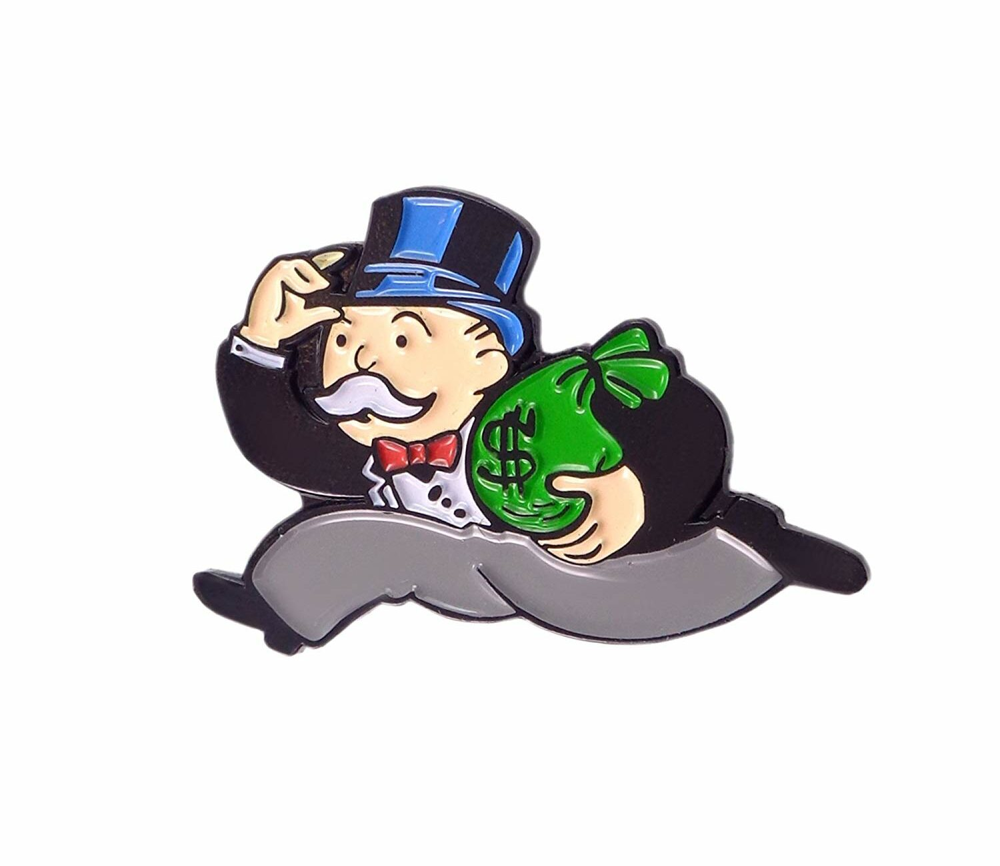
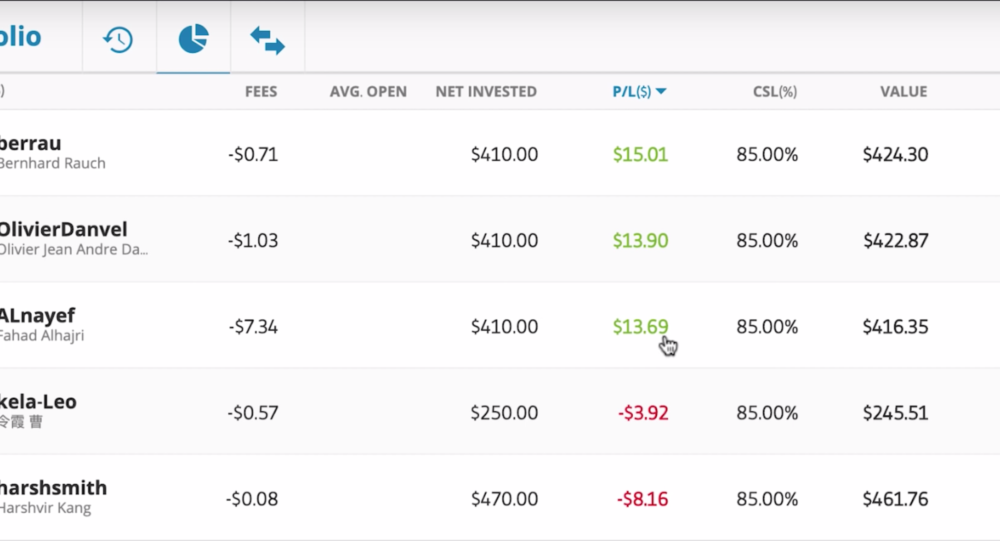
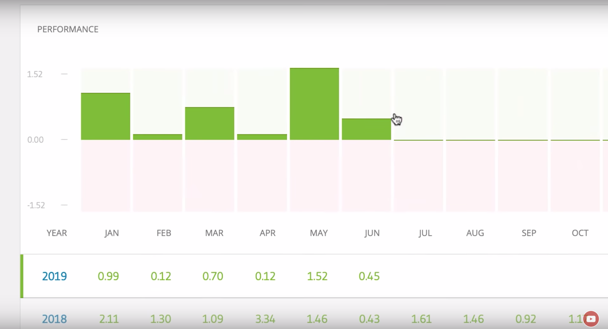

June 15, 2019 Social Trading Vlog Copy Trading / Decentralisation / Money Management
I've been helping my brother make some videos on the topic of 'decentralization' lately.
It's a fascinating subject, and sheds a lot of light on where Bitcoin came from.
It also explains why they made cryptocurrencies - what its creators were hoping to achieve.
I was going to put the videos on my channel, but really, it makes more sense on his. As time goes on, he'll be making more, so if you're interested, go check it out.
Giving Money away
I also go over my tentative plan to give away 10% of some of my earnings...
More specifically, anything I make from the eToro Popular Investors Program.
Now, I don't know if I'll stick to this - it's just a thought, but I'll give it a try.
For now, I have very little money. I'm used to having little money, and just sort of surviving. But I've known a lot of rich people, and I've seen some of the associated traps. It seems fairly easy to end up rich and wondering why you're not that happy.
From what I can see, the happy ones are the people who manage to help others even in some small way. The wisest people I've listened to around money talk about this quite a lot. I've also heard it talked about from various ancient and modern cultures. It seems that as long as you can keep giving, you stand a better chance of staying happy.
It's probably because there's joy associated with your succes, rather than just fear of losing it. That seems to be a big trap a lot of people fall into. I hear a lot about how to make money. But I'd also like to know how you can live really well whilst you have it 🙂
Anyhow - that's the idea. We'll see how it goes...
Copy Trading Portfolio Update time
The portfolio's been going well. So well that there's not much to say since last time really.
Alnayef's increasing fees and lack of change means that I'm now officially concerned.
I'll be drawing down how much I'm copying him with and making him and Kela-Leo more even.
I'll be adding more money (when I get it) to Harshsmith, Berrau and Olivier Danvel. I'd like to have those at around 24% of my portfolio each (around 72% in total).
Then Kela-Leo and Alnayef can make up possibly the other 28% between them. We'll see...
Berrau And the AUD/USD Forex Trade
Bearrau had a bit of a turbulent time, after a forex tade on AUD/USD went against him. He reacted well though, using 'cost averaging' to bring his overall buy-in price down.
When the pair went his way, he could get out faster, and in profit! good work sir 🙂
He's doing very well for the month, at 1.57% profit so far. He's just doing a great job, and I'm really pleased.
I'll be adding more money to my copy of Berrau as soon as I have it.
This wasn't the first time Berrau had been in a forex trade which went against him. He's been in a few now, and each time he's used wise technicques to trade his way out of it.
When a trade's going too far against Berrau, he often opens a position in the opposite direction as a hedge. If his 'sell' trade is losing too much, he'll often open a 'buy' trade for the same amount in the same instrument.
The effect is that as one goes down, the other is going up with the same value, so the profit remains static. The wins perfectly cancel out the losses. When things settle down, he starts to use cost averaging or smaller trades to make his way out of the position. It's worked every time so far. The result is that I was less worried when I saw the trade go the wrong way this time. I've seen it before, and he handled it well.
How's Olivier doing? Still Green?
Yep. Still green, and doing well.
He's been consistently taking small amounts out of the market for me. Steady and encouraging stuff 🙂
He's currently made just under half a percent so far in June.
I'll be adding more money to my copy of Oliver too. He's fitting in with my overal goal... "Who is steadily going to make me money, even if it's slowly, with very small risk of losing my money." Sounds simple, but you'd be surprised how hard that question is to answer.
Alnayef and my fees worries
The fees on my copy of Alnayef are now over 50% of the profit he's made me over the lifetime of copying him.

That's too much for me.
I went over the fees concerns with Alnayef in my last copy trading update.
The situation doesn't seem to be remedying itself. The open losing trades continue to draw down, and the fees increase.
I'm still going to keep copying him to see what happens, but for now my sentiment is negative on the copy. It's a shame as I think he's talented, and he was doing really well for me.
I won't be adding more funds to my copy of him though - I'll be adding them to Berrau, Olivier, and Harshsmith.
Kela-Leo and a possible Gold Bull Market
Kela-Leo's been holding open a few Gold 'sell' positions. This would make sense in some ways, except that it looks like a new Gold bull-run may be starting. That's not so good. He's down 1.79% so far for the month, and my copy of him continues to go the wrong way.
His risk's still low, and he hasn't lost that much to be honest. I think I may have just copied him at an unfortunate time when things don't seem to be going his way. I'm still going to wait and see though. If he was losing greatly, I'd be more concerned, but for now, it's all relatively small movements.
Harshsmith - Nothing to report.
So little has changed that there's not much to say about my copy of Harshsmith. He hasn't really gained or lost much at all. Just there, steady, still at a slight loss, but nothing too concerning. I'll wait and see 🙂
Want to see my current eToro statistics? View my profile on eToro →